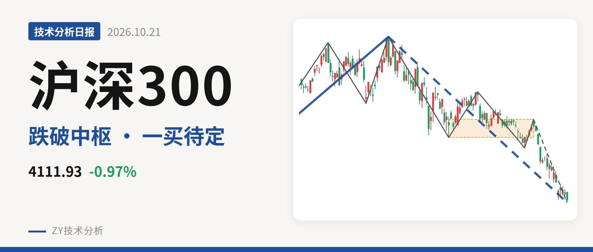
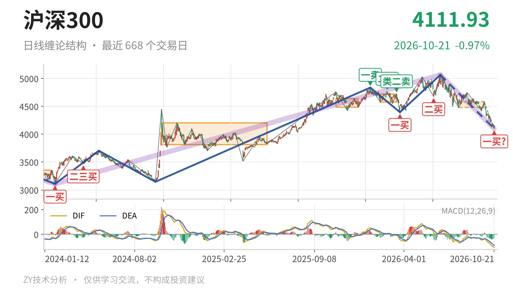
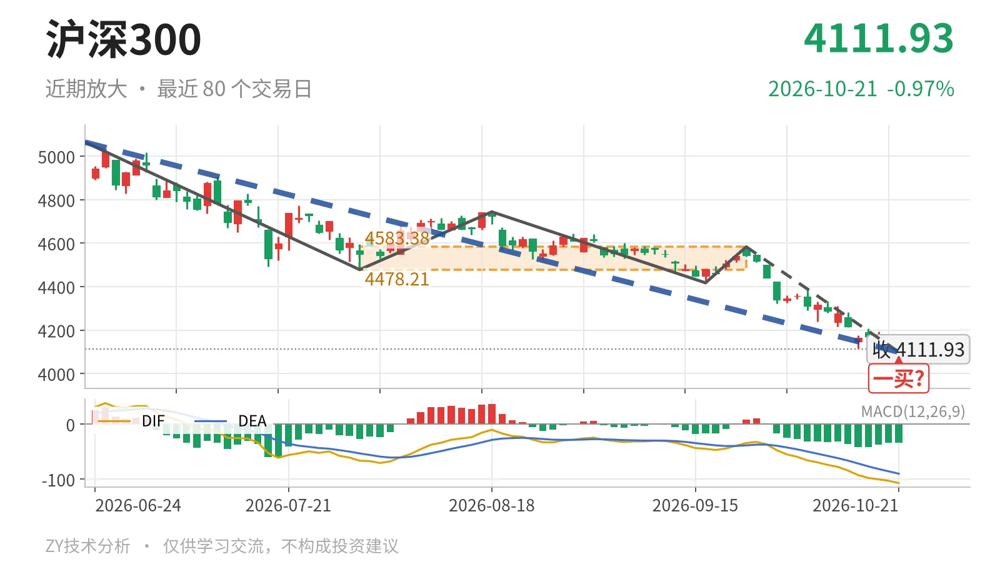

沪深300｜失守4478点中枢下沿，一买待定

最近日线中枢 4478.21—4583.38点，收盘位于中枢之下
一句话：日线下跌段未结束，价格低于最近中枢下沿，一买暂定。
📉 走势结构：日线下跌段还在延续
当前处于6月23日以来的日线下跌线段内，这个线段从5064.27点起步，低点暂为4098.96点，还没有结束。更大级别上，2024年2月2日至2026年6月23日的上涨走势没有走完，但6月23日以来的回落段已形成深度调整，同样没有结束。3月24日至6月23日的上涨线段涨约15.2%后结束，随后转入当前下跌段，内含5笔，最后一笔下跌还在延续。

📍 中枢与位置：价格跌破最近中枢下沿
最新收盘4111.93点位于7月30日至9月22日形成的最近日线中枢（尚未完成）4478.21—4583.38点下方，低于下沿约8.2%。最近中枢相较2月3日至3月17日中枢4578.21—4720.86点出现下移，中轴由4649.53点降至4530.80点。价格同时回到2024年10月8日至2025年5月30日中枢3812.32—4200.91点内部，尚未触及下沿。
🧭 买卖点：4098.96点只是暂定一买
10月21日盘中低点4098.96点构成日线一买，但所在9月22日以来的下跌笔还在延续，这个一买暂定，会随这一笔的延续而变化。此前3月24日一买4394.29点和6月8日二买4677.57点之后虽反弹至5064点，但当前已创出4098.96点新低，这两个买点只对应较小级别。更早的1月13日一卖4836.95点、2月25日二卖4766.56点、3月17日类二卖4720.86点一个比一个低，反弹结构偏弱。

⚡ 背驰：DIF低点继续下移，不算标准背驰
关键对比是6月23日至7月30日下跌笔与9月22日以来的下跌笔。后者把价格从4583点压到4098点，绿柱面积422，小于6月23日至7月30日下跌笔的绿柱面积650；但DIF低点从-66.5降至-107.1。这不是标准的新低不新弱，绿柱面积收缩但DIF低点继续走低，下跌力度尚未完全衰减。9月22日以来的这一笔还在延续，背驰不能确认。
🔍 关键位置观察：反抽不回4478点则结构仍弱
反抽若回不到4478点上方，结构上构成三卖；重新站上4583点，下跌更可能只是中枢扩展。下方结构位看3812点附近，对应2024年10月8日至2025年5月30日中枢下沿。当前价格在最近中枢下方，DIF仍位于零轴之下，绿柱面积虽有收缩但DIF低点继续下行，结构偏弱。
⚠️ 本文为基于公开行情数据的缠论技术结构记录，由程序自动计算并生成，仅供学习交流，不构成任何投资建议。市场有风险，投资需谨慎。